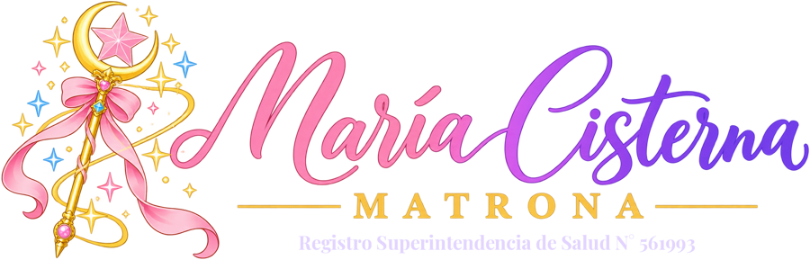
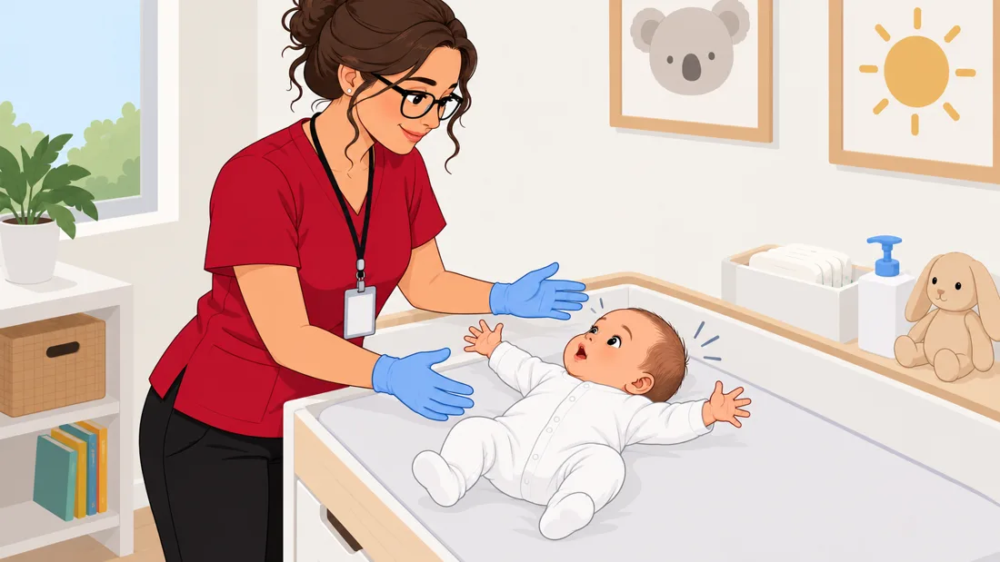
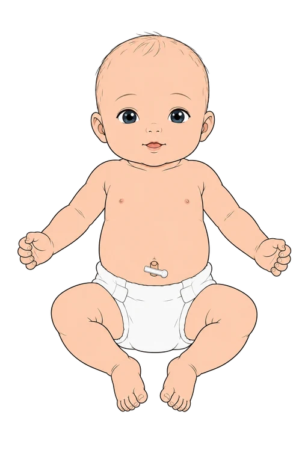
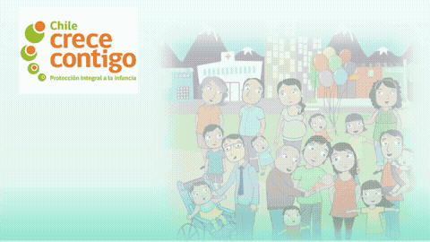

Del embarazo a la crianza, acompañada
Grabé esta cápsula en 2020 para Chile Crece Contigo, cuando trabajaba en Andacollo y estaba a cargo de la clínica de lactancia. Ahora la amplié con todo el camino: embarazo, parto, recién nacido, lactancia y posparto. Está escrita como lo explico en la consulta: simple, paso a paso y sin miedo a preguntar.
▶ Cápsula 2 min · 7 etapas · herramientas para usar 🎬 8 cápsulas en video
Ocho cápsulas animadas, narradas por mí
Videos cortos para ver en la sala de espera, en la casa o para compartir. Toca una para verla.
¿Qué quieres saber?
Escribe o toca un tema y te llevo directo. Para profesionales marca las partes más técnicas.
¿Qué tienes listo?
Marca lo que ya hiciste. Queda guardado solo en tu navegador.

¿Cada cuánto, qué ecografías y qué exámenes?
Tus controles son con la matrona en el CESFAM. En el sistema público se cubren 3 ecografías (la de 11–14 reemplaza a la precoz). Entre las 28 y 36 semanas, la Guía MINSAL indica cada 2 semanas y el Manual UC 2026, cada 3. Toca un trimestre para ver qué ecografía te toca, qué exámenes y para qué sirve cada uno.
¿Están bien tus números? También para profesionales
Lo que tú sientes: sus movimientos
Los empiezas a sentir entre las 18 y 20 semanas (antes si no es tu primer embarazo). Si se mueve menos que siempre, cuéntalos: menos de 10 en 2 horas, a la maternidad. En tu agenda Chile Crece Contigo verás otra forma: después de comer, acostada del lado izquierdo, menos de 6 en 1 hora es para consultar.
Lo que se escucha: sus latidos
Es distinto: los latidos cardiofetales (LCF) los escucha tu matrona con Doppler desde las 12 semanas o con estetoscopio de Pinard desde las 18–20. Lo normal es 110 a 160 por minuto (en el primer trimestre, hasta 180).
Bradicardia y taquicardia
Bradicardia: menos de 110 latidos por minuto que se mantiene. Taquicardia: más de 160 que se mantiene (puede ser por fiebre de la mamá, remedios o infección). Si te dicen que están bajos o altos, o no se escuchan, consulta de inmediato en la urgencia de tu maternidad.
Elige un valor y mueve la barra con el número que te dieron. Te dice si está en rango, si debes consultar pronto o ir a urgencia.
Lo que hay que cuidar en el embarazo
Elige una. Verás qué es, cómo se detecta, sus riesgos, qué se hace y dónde se controla. CESFAMAROUrgencia
¿Cuándo te derivan a ARO? Para profesionales
Qué es
El policlínico de Alto Riesgo Obstétrico del hospital (nivel secundario). Te ve un obstetra con una matrona ARO, con más ecografías y exámenes.
No dejas tu CESFAM
Sigues con tu matrona, Chile Crece Contigo, dentista y nutricionista. El hospital controla la patología.
Si se complica
Si la patología es grave, te hospitalizan o te derivan a un centro de mayor complejidad (nivel terciario).
¿Tienes alguno? Marca lo que te pasa:
Lo que tienes garantizado
Salud oral integral
Dentista desde que se confirma tu embarazo: la atención parte dentro de 21 días y dura hasta 15 meses desde la primera atención. En la red pública con Fonasa, sin copago.
Analgesia del parto
Anestesia para el dolor del parto (peridural), si la pides y no tienes contraindicación.
Prevención del parto prematuro
Medición del cuello del útero y progesterona si está corto; aspirina si tienes riesgo.
VIH y depresión
Tratamiento del VIH para ti y tu guagua, y atención de la depresión en el embarazo y el posparto.
Lo que te ayuda y lo que te corresponde
Suplementos
Ácido fólico desde antes del embarazo y en el primer trimestre (0,4 mg al día; 4 a 5 mg si tienes más riesgo u obesidad). Desde las 16 semanas, hierro; calcio con 4 a 5 lácteos al día o comprimidos si te los indican.
Tu peso
Lo esperable es subir cerca de 1 kilo por mes, con peso normal, entre 11,5 y 16 kilos en total. Con sobrepeso, 7 a 11,5; con obesidad, 5 a 9; si partes con bajo peso, 12,5 a 18.
Evita
Alcohol y cigarro (nada es seguro), carnes crudas o poco cocidas, embutidos crudos y lácteos sin pasteurizar.
Sí puedes
Ejercicio moderado 3 a 5 veces por semana (sin deportes de contacto). Relaciones sexuales, salvo placenta previa, gemelos, cerclaje o riesgo de parto prematuro. Asiste a los talleres de preparación para el parto de Chile Crece Contigo.
Tus derechos laborales
Prenatal de 6 semanas (licencia desde las 34), postnatal de 12 semanas (18 semanas en total si tu guagua nace antes de las 33 semanas o pesa menos de 1.500 g; si son mellizos o más, 7 días más por cada guagua extra) y postnatal parental de 12 semanas (o 18 a media jornada). Fuero desde que empieza el embarazo hasta 1 año después del postnatal, cambio de labores riesgosas, sala cuna y hora de amamantamiento.
En el parto
Si al llegar todavía no estás en fase activa, te pueden pedir caminar un par de horas y volver. Puedes caminar en la dilatación, elegir tu posición, ir acompañada y pedir anestesia peridural (GES), que no alarga el parto.
Leyes que te protegen
Toca cada ley. Te las pueden preguntar en el control o en el hospital: conócelas.
¿Voy a urgencia? Marca todo lo que sientes
Una contracción se siente…
La guata se pone dura como piedra, con dolor tipo regla fuerte que parte en la espalda o abajo y se pasa. Las de entrenamiento (Braxton Hicks) son irregulares, casi sin dolor y se pasan al descansar.
¿Cuándo ir?
Antes de las 37 semanas: 4 o más en 1 hora, o dolor que no se pasa. De término: cuando lleves 1 a 2 horas con contracciones regulares cada 3 a 5 minutos, cada vez más fuertes (Manual UC 2026; muchos lo resumen como regla 5·1·1).
Cuenta sus movimientos
Los sientes desde las 18–20 semanas. Si sientes que se mueve menos que siempre: 1 hora después de comer, acuéstate de lado (izquierdo o derecho), sin moverla, y cuenta por 2 horas. Si son menos de 10, ve a la maternidad.
Tu bolso para la maternidad
Tenlo listo desde la semana 36. 0 de listos.
Bono PAD Parto 2026
Quién
Fonasa tramos B, C y D, con embarazo de bajo riesgo.
Cuándo
Lo compras desde la semana 37, en un prestador con convenio PAD.
Incluye
Equipo médico y matrona, parto o cesárea, días cama, controles de la mamá y atención del recién nacido.
No cubre embarazo múltiple, prematuros (antes de 37 semanas) ni complicaciones graves. En la red pública el parto no requiere bono.
¿Ya es hora de ir?
Toca al empezar y al terminar cada contracción.
¿Cuándo ir a la maternidad?
Cuando lleves 1 a 2 horas con contracciones regulares cada 3 a 5 minutos, de 30 a 60 segundos, cada vez más fuertes (Manual UC 2026). Muchos lo resumen como regla 5·1·1: cada 5 minutos, de 1 minuto, por 1 hora. Es la curva lila del gráfico.
Ve de inmediato si…
Se rompe la bolsa (líquido), sangras como regla, tu guagua se mueve menos o tienes menos de 37 semanas.
Puede esperar
Salida del tapón mucoso o contracciones irregulares que se pasan al descansar.
¿Qué estás sintiendo? Muévelo y mira la curva
Tu última hora de contracciones
Cada ola es una contracción: el ancho es lo que dura y el espacio entre olas, el descanso. Cuando tus olas rosadas se parecen a las lilas durante 1 hora, es momento de ir.
Sus primeros pasos
1 · Apego
Piel con piel desde que nace: regula su temperatura, lo calma y ayuda a la primera mamada.
2 · Inscríbelo
En el Registro Civil (muchas maternidades tienen oficina), gratis y dentro de 60 días. Lleva el comprobante de parto y tu cédula.
3 · Control díada
Con la matrona, idealmente 2 a 3 días después del alta y siempre antes de los 10 días: te evalúa a ti y a tu guagua juntos.
Sus primeras vacunas y exámenes
BCG
Contra las formas graves de tuberculosis. Una dosis en el brazo; deja una marquita que tarda semanas en sanar: no la cubras ni le pongas cremas.
Hepatitis B
Una dosis al nacer, idealmente en las primeras 24 horas. Si tú tienes hepatitis B, además recibe inmunoglobulina antes de las 12 horas.
Nirsevimab (virus sincicial)
Anticuerpos contra el virus sincicial. Se pone en la maternidad, antes del alta, en la campaña de cada año (en 2026: nacidos desde el 1 de octubre de 2025, hasta el 30 de septiembre), y a los de alto riesgo hasta los 24 meses.
Examen del talón
Gotas de sangre del talón, en general entre las 24 y 72 horas de vida, para detectar hipotiroidismo y fenilcetonuria y, en las maternidades con pesquisa neonatal ampliada (desde 2025), hasta 26 enfermedades. Tratadas a tiempo, no dañan su desarrollo.
Audición
Emisiones otoacústicas: un audífono pequeño que mide si su oído responde. Fonasa lo financia en el parto; es garantía GES en prematuros.
Ojos
Rojo pupilar: con una luz se ve el reflejo rojo en ambos ojos. Si no aparece, se deriva para descartar catarata o un tumor del ojo.
Tu ajuar para la guagua
Toca cada pregunta.
Te sigue acompañando
Programa de Apoyo al Desarrollo Biopsicosocial
Acompaña a tu hijo o hija desde el embarazo hasta los 9 años en el sistema público: controles de salud, evaluación del desarrollo y apoyo a la familia.
Talleres y visitas
Talleres de crianza (Nadie es Perfecto), salas de estimulación en el CESFAM y visitas a tu casa si tu familia lo necesita.
Ayuda por teléfono
Salud Responde 600 360 7777, todos los días a toda hora: dudas de salud, lactancia y crianza.
Lo que le revisan a tu guagua Para profesionales
Toca cada paso. Primero se mide y luego se examina de la cabeza a los pies.
Los números de tu guagua También para profesionales
Los toma el equipo de salud. Úsalos para entender lo que te dicen en la maternidad o en la díada.
Sus reflejos
Toca cada tarjeta para ver qué hace, para qué le sirve y qué revisa la matrona. Se evalúan en la díada y en los controles porque muestran que su sistema nervioso madura bien: lo importante es que estén, que sean iguales a ambos lados y que desaparezcan a su tiempo. Si un reflejo falta, es distinto en un lado o sigue después de la edad esperada, se estudia.

¿Hasta dónde llega la ictericia?

ombligorodillasEl amarillo parte en los ojos (las escleras) y la cara, baja hacia los pies (avance céfalo-caudal) y se va al revés, de los pies hacia la cabeza. Mientras más abajo llega, más alta está la bilirrubina.
¿Qué examen se toma?
Bilirrubina en sangre (total y directa), de una gotita del talón o de la vena. Algunos CESFAM y maternidades tienen un bilirrubinómetro transcutáneo que la estima apoyándolo en la frente o el pecho, sin pinchar. Si sale alta, se agregan grupo y Rh, Coombs directo y hemograma.
En el CESFAM
En la díada la matrona mira hasta dónde llega el amarillo con luz de día, pesa a la guagua, revisa el acople y cuántas veces mama, y mira las cacas y la orina. Si es leve, se aumentan las mamadas y se cita a control en 24–48 horas. Si es moderada, se pide la bilirrubina.
Se deriva al hospital si…
Aparece en las primeras 24 horas, llega bajo las rodillas o a palmas y plantas, la guagua está decaída o mama mal, bajó más de 10% de su peso, nació antes de las 37 semanas, o tiene cacas blancas u orina oscura. Allá miden la bilirrubina y deciden la fototerapia (luz azul en la incubadora).
¿Y si dura mucho?
Si sigue amarilla después de los 14 días (21 en prematuros), hay que consultar: se pide bilirrubina total y directa para descartar un problema del hígado, aunque se vea bien.
Cuidados de tu guagua
Lleva a tu guagua a urgencia si…
Lo que te revisan a ti
¿Cuánto te quedas en la maternidad?
Si todo es normal (fisiológico), unas 48 horas, tanto en parto vaginal como en cesárea (en la cesárea a veces hasta 72). Si tú o tu guagua necesitan más observación, se quedan más días.
Antes de irte
Te revisan a ti y a tu guagua, le toman el examen del talón y la audición, recibe sus vacunas, haces el taller con la matrona, recibes el ajuar y te dan la hora para el control díada (2 a 3 días después del alta).
Para que sanes mejor
Tus números después del parto También para profesionales
La presión alta y la fiebre después del parto también son alarma: la preeclampsia puede aparecer hasta 6 semanas después.
¿Por qué 42 días sin relaciones?
Tu útero está sanando
Donde estaba la placenta queda una herida grande por dentro. El cuello del útero tarda en cerrarse y salen loquios: con relaciones puede entrar una infección.
Tus puntos
La episiotomía, un desgarro o la cesárea necesitan semanas para cicatrizar bien y no abrirse.
¿Y si me esterilizaron?
Igual espera los 42 días: la esterilización protege del embarazo desde el primer día, pero no de las infecciones ni ayuda a que sanes.
¿Exactamente 42 días?
La cuarentena clásica son unos 40 a 42 días. El Manual UC 2026 dice que tu matrona puede autorizarte desde los 30 días si ya no tienes loquios, el cuello del útero está cerrado, sanaron tus puntos y te sientes cómoda.
Al volver
Usa lubricante (con lactancia hay sequedad), ve con calma y usa condón si tienes más de una pareja.
Ve a urgencia tú si…
Marca sus mamadas del día
Lo ideal es cada 2 horas y no más de 3: 8 a 12 veces en 24 horas, de día y de noche. Queda guardado solo en tu teléfono.
¿Cuánto rato?
No hay un tiempo fijo: déjalo en el primer pecho hasta que lo suelte solo (en general 10 a 40 minutos) y ofrécele el otro.
¿Y en la noche?
Hasta que recupere su peso de nacimiento (10–14 días) y vaya subiendo bien, despiértalo si pasan más de 3 horas. Después, si la matrona o el médico ve que sube bien, puedes dejarlo dormir y retomar cuando despierte, aunque sea en la mañana.
¿Está comiendo bien?
Desde el 5.º día: 6 o más pañales mojados y 3 o más cacas amarillas al día, traga y se ve satisfecho.
Si duele o se pone duro
¿Cómo me extraigo y guardo mi leche?
1 · Prepárate
Lávate las manos. Usa un frasco de vidrio o plástico duro limpio, con tapa, o bolsas para leche. Busca un lugar tranquilo; mirar a tu guagua o una foto suya ayuda a que baje la leche.
2 · Estimula
Masajea suave el pecho en círculos, desde afuera hacia el pezón, y acarícialo de arriba hacia abajo. Inclínate un poco hacia adelante.
3 · Extracción manual
Pon el pulgar arriba y los dedos abajo, en forma de «C», a unos 3 cm del pezón. Empuja hacia tus costillas, aprieta y suelta, con ritmo, sin deslizar los dedos. Rota la mano para vaciar todo el pecho.
4 · Con extractor
Manual o eléctrico, con la copa de tu tamaño. Empieza con poca fuerza: no debe doler. Unos 15 a 20 minutos, alternando los pechos cuando el chorro baje.
5 · Rotula y guarda
Anota fecha y hora, guarda porciones de 60 a 120 ml y enfríala lo antes posible. Mira abajo cuánto dura.
6 · Calienta a baño María
Pon el frasco cerrado en una olla o taza con agua tibia (no hirviendo) unos minutos. Agita suave y prueba unas gotas en tu muñeca: debe estar tibia. Nunca en microondas. Lo que sobre de esa toma se bota.
Para descongelar: déjala en el refrigerador desde la noche anterior, o bajo el chorro de agua tibia, y después caliéntala a baño María.
Sí
- Lávate las manos y usa frascos limpios con tapa o bolsas para leche.
- Rotula con la fecha y hora; usa primero la más antigua.
- Guarda porciones pequeñas (60 a 120 ml).
- Descongela en el refrigerador o a baño María tibio; prueba la temperatura en el dorso de tu mano.
- Agita suave: la grasa se separa y es normal.
No
- No uses microondas: calienta disparejo y destruye defensas.
- No vuelvas a congelar leche descongelada.
- No juntes leche recién extraída con leche congelada.
- No guardes en la puerta del refrigerador ni del congelador.
- No llenes el frasco hasta arriba si la vas a congelar: la leche se expande.
- Lo que sobró de una toma se bota.
¿Qué aumenta mi leche?
Funciona (y no daña a tu guagua)
- Vaciar seguido: 8 a 12 tomas al día. Mientras más sale, más se produce.
- Buen acople: si toma solo el pezón, saca poco.
- Piel con piel y tenerlo cerca: sube la oxitocina.
- Ofrecer los dos pechos y comprimir el pecho mientras traga.
- Extraerte 10–15 minutos después de las tomas si necesitas más.
- Evitar relleno, chupete y mamadera las primeras semanas, salvo indicación.
- Descanso, comida y agua según tu sed.
No está comprobado
- Hierbas, té, malta, cerveza, avena o "galletas de lactancia": no hay evidencia de que suban la leche, y la cerveza pasa alcohol a tu guagua.
- Tomar mucha más agua de la que pide tu sed.
- Remedios para la leche (domperidona): solo con receta, en casos puntuales.
Si sientes que no te alcanza, ve a tu CESFAM: la clínica de lactancia revisa el acople y el peso.
¿Cuándo no dar pecho?
No dar pecho
Mamá con VIH (en Chile se entrega leche artificial) o HTLV-1. Guagua con galactosemia clásica. Quimioterapia o exámenes con material radiactivo. Uso de drogas como cocaína o pasta base.
Solo por un tiempo
Tuberculosis activa sin tratar: separados, con tu leche extraída. Varicela de 5 días antes a 2 después del parto. Herpes en el pecho: no de ese lado. Después de tomar alcohol, espera 2 a 3 horas por trago.
Sí puedes dar pecho
Con resfrío, fiebre, gripe o COVID-19 (con mascarilla), mastitis, hepatitis B (con vacuna de tu guagua), la mayoría de los remedios, vacunas y anestesia dental. Pregunta siempre.
Lo que comes y tu leche
No necesitas dieta especial
Tu leche se forma de tu sangre, no de tu estómago. Puedes comer de todo: los porotos o el brócoli no le dan cólicos.
Sí pasan los sabores
Ajo, vainilla o zanahoria cambian el sabor de la leche. ¡Le preparan para la comida de la casa!
Come y toma agua por ti
Más líquido y comida equilibrada te dan energía para recuperarte. Ten agua a mano en cada mamada.
Ojo con
Alcohol: evítalo. Café: hasta 2–3 tazas al día. Remedios: pregunta siempre si son compatibles.
Lo que protege
Episodios que se podrían evitar con lactancia (Victora et al., Lancet 2016) y reducción del riesgo de cáncer de mama por cada 12 meses de lactancia.
¿Qué método puedo usar hoy?
Todos los métodos que hay en Chile, según las Normas Nacionales sobre Regulación de la Fertilidad (MINSAL), los Criterios médicos de elegibilidad de la OMS (2025) y el Manual UC 2026.
⚖ Importante para adolescentes (para tu conocimiento)
A cualquier edad puedes pedir orientación y un método anticonceptivo en tu CESFAM, sola o acompañada, y la atención es confidencial (Ley 20.418 y Normas de Regulación de la Fertilidad). No te pueden exigir permiso de tus padres.
Si tienes menos de 14 años y pides la píldora de emergencia, te la entregan, y la ley indica que después se informa a tu madre, padre o al adulto que tú elijas.
Una relación sexual con una persona menor de 14 años es delito, aunque ella diga que quiso, sobre todo si la pareja es mayor de edad (Código Penal, art. 362). Si hay señales de un delito o de abuso, el equipo de salud está obligado a dar aviso a la fiscalía (Código Procesal Penal, art. 175). Pedir un anticonceptivo, por sí solo, no es motivo de denuncia.
No es para asustarte ni para castigarte: es para protegerte. Puedes preguntar con confianza a tu matrona.
¿Lo tienes claro?
¿Quién lo controla y cuándo?
Con Fonasa, en el CESFAM donde estás inscrita; con isapre, con su pediatra. Las vacunas del programa son gratis para todos en cualquier vacunatorio público, y también se ponen en vacunatorios privados en convenio.
Hierro: si toma solo pecho, el equipo suele indicarlo desde los 4 meses. Las vacunas quedan en su Cuaderno de Salud.
Calendario de vacunas (Programa Nacional de Inmunizaciones)
GES de tu hijo o hija
Displasia de caderas
Radiografía de pelvis a los 3 meses y tratamiento si sale alterada.
Si nació antes de tiempo
Prematuros: control de la vista (retinopatía), de la audición y de los pulmones.
Al nacer con
Cardiopatías congénitas operables, fisura labiopalatina, disrafias espinales, entre otras.

El rol de la matrona en Chile Crece Contigo
Ingreso al control prenatal, pesquisa de riesgos, parto, control díada, lactancia y anticoncepción: la matrona acompaña todo el camino.
Las ilustraciones y el logo de la cápsula pertenecen al material del programa Chile Crece Contigo. La cápsula la creé yo como matrona.
© 2026 María Cisterna Escobar, matrona · Registro Superintendencia de Salud N° 561993. Todos los derechos reservados. Información educativa: no reemplaza tu control. Cápsula grabada en 2020; revisa beneficios vigentes en chilecrececontigo.gob.cl.